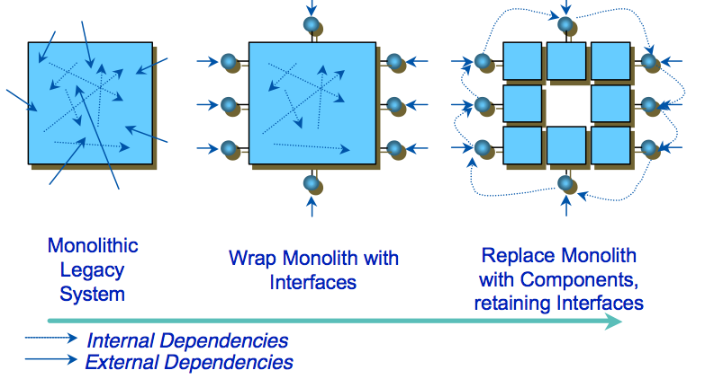

"Applications distribuées"
Stéphane Genaud
Thèmes abordés
Les thèmes que recouvre "Applications distribuées": toutes les tentatives de faire participer des machines distantes à un traitement informatique.
- système d'échange de messages,
- systèmes d'exploitation distribués
- applications réparties/parallèles
Thèmes abordés
Tous ces systèmes nécessitent certaines techniques usuelles pour leur fonctionnement:
- technique de localisation (annuaires, découverte, ...),
- horloges globales,
- identifiants uniques,
- espace global de stockage (disque, mémoire)
Thèmes abordés
Depuis 1985, au fil du temps, les technologies ont évoluées sur la base d'idées fondamentales avec des ajouts, selon des déclinaisons différentes. Par exemple:
- RPC (Sun, 1988),
- Java RMI (Sun, 1997 - JDK 1.1)
- CORBA (OMG, 1998),
L'évolution des technologies
Les technonologies des applications distribuées doivent s'adapter-
à l'évolution des technologies matérielles, marquée par
évolution rapide
- des capacités des réseaux informatiques,
- des capacités des processeurs (loi de Moore puis augmentation nombre de coeurs)
- à l'évolution des technologies logicielles, marquée par multiplication des systèmes d'exploitation, des protocoles, ...
Chronologie
 20 ans d'histoire.
20 ans d'histoire.
- Les tendances logicielles s'adaptent au matériel et à son coût économique. (ex: les stations diskless ont disparu dès que le disque est devenu peu cher).
- Parmi les tendances, plus de naissances que de morts. Donc, plus de choix possibles pour implanter une solution (et plus de besoins de niches).
1985~1995 : des systèmes d'exploitation distribués
- Mach, Chorus, DCE, ...
- Tout le parc de machines est installé avec l'OS.
- Technologie de micro-noyau.
- Permettent la programmation distribuée au niveau système.
~1995: l'hétérogénéité entérinée
~1998: développement distribué hététogène
- Développement de technologies pour la programmation distribuée en environnement hétérogène.
- Deux idées:
- supporter l'hétérogénéité des OS et langages (CORBA)
- supporter l'hétérogénéité des OS à l'aide d'une machine virtuelle (JavaRMI).
- Naissance de l'idée d'application distribuée à grande échelle (grille)
~2001: les composants
 Les difficultés de maintenir des codes sur des plateformes changeant sans arrêt conduisent à une tentative d'encapsulation plus grande des codes. Un composant est un élément qui:- contient toute sa logique et ses données (comme un objet)
- est composable: interfaces externes bien définies, pas de communications cachées.
- est configurable pour être déployé dans différents contextes.
1998~2006: La "mondialisation"
Parallèlement, depuis la fin des années 1990, l'idée de transposer le formidable succès de HTTP pour les applications fait son chemin. Objectif: permettre à des applications appartenant à des entités différentes de coopérer.
2007-2010: Externalisation totale
Constat:
- accélérations des usages et besoins issus d'internet, notamment avec la mobilité (géolocalisation, syncronisation, ...)
- complexité techniques croissantes des environnements: rapport amortissement sur dépense d'investissement décroit,
- difficultés de dimensionner les infrastructures matérielles (ex: Amazon: pic de charge à Nöel).
Solution: Externaliser !
2007-2010: Externalisation totale
Trois formes d'externalisation:
- recours à des applications en ligne: SaaS (Software as a Service) -- (Google Apps, Microsoft BPOS, Adobe Acrobat.com, ...)
- recours à l'infrastructure matérielle d'un fournisseur à travers une API: PaaS (Platform as a Service) --
(Google AppEngine, Microsoft Azure, amazon AWS,...),
Ex: (Utiliser Google AppEngine avec Java: video) - recours à l'infrastructure matérielle d'un fournisseur par prise de contrôle total: IaaS (Infrastucture as a Service) -- (Amazon Elastic Cloud),
Aujourd'hui
- Le développement d'application distribuées utilisant une technologie homogène existe encore.
- Les efforts vont vers des technologies qui peuvent s'intégrer dans le paysage des protocoles existants
- Utilisation massive de http+javascript pour fournir une interface utilisateur.
- Définition de protocoles pour fournir des service de grilles (OGSI/OGSA).
- Définition des technologies de web-services (SOAP, WSDL, UDDI).
- Découverte des problèmes liés au passage à l'échelle et à l'hétérogénéité: de nouvelles technologies sont envisagées pour le modèle de programmation (e.g. pair-à-pair avec JXTA) ou pour abstraire le matériel (virtualisation).